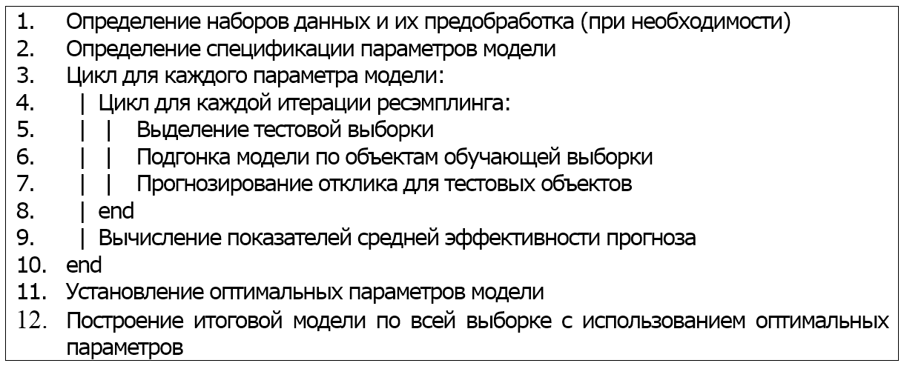

ГЛАВА 3 Пакет caret - инструмент построения статистических моделей в R
3.1 Универсальный интерфейс доступа к функциям машинного обучения в пакете caret
Использование сложных алгоритмов построения статистических моделей становится все более распространенной тенденцией в самых разных областях - от академических исследований до всевозможных бизнес-приложений. Среда статистических вычислений R отличается особенно богатым набором пакетов для создания различных моделей классификации и регрессии. Однако такое высокое разнообразие реализованных алгоритмов создает и ряд некоторых проблем.
Для аналитика становится затруднительным выбрать конкретный алгоритм машинного обучения, составить план оптимизации параметров, учесть синтаксические нюансы каждой функции и отследить особенности ее выполнения. Кроме того, процедуры, позволяющие реализовать полный цикл разработки предсказательных моделей, часто “разбросаны” по разным пакетам, что требует времени для поиска необходимых компонент и их освоения. Возникает потребность как-то интегрировать разные функции и методы в рамках некоторой единой надстройки, что позволило бы обобщить характерные для всех моделей процедуры вычислений.
Выполняя эту задачу, д-р М. Кун с сотрудниками предприняли попытку разработать универсальный интерфейс, предоставляющий доступ к основым алгоритмам машинного обучения, реализованным в R и других специализированных статистических системах (например, Weka). Разработчики поставили перед собой следующие задачи:
- учет имеющихся синтаксических различий между используемыми функциями R при построении моделей классификации и регрессии и тестировании их возможностей для прогнозирования;
- развитие ряда полуавтоматических, интеллектуальных подходов и критериев для оптимизации настраиваемых коэффициентов и параметров многих из этих моделей с использованием алгоритмов ресэмплинга;
- создание пакета с постоянно расширяющимся набором методов;
- реализация параллельных вычислений при подгонке моделей.
Результатом этой работы стал пакет caret (сокращение от Classication and Regression Training), который сегодня стал одним из наиболее популярных инструментов среди пользователей R, занимающихся разработкой предсказательных моделей. Основные возможности пакета caret достаточно полно представлены в публикациях разработчиков (Kuhn, 2008, 2012, 2013; Kuhn, Johnson, 2013).
На момент написания этой книги пакет caret включал унифицированный интерфейс со 147 функциями из 27 пакетов, которые автоматически подгружаются по мере необходимости (в случае, когда они установлены в системе). Наиболее распространенная технология работы с функциями пакета связана с автоматизированным нахождением оптимальных значений гиперпараметров моделей (tuning parameters), которые обычно невозможно вычислить аналитически, и построена по следующей формальной схеме:

Кроме возможностей для настройки параметров, пакет caret содержит набор различных функций, способствующих реализации полного цикла разработки предсказательных моделей, начиная от сервисных процедур подготовки исходных данных до детальной оценки важности переменных, включенных в итоговую модель. Перечислим основные этапы построения моделей и функции пакета, реализующие их выполнение:
- Разбиение исходных данных на обучающую и контрольную выборки. Формирование индексов любой такой последовательности для вектора x случайным образом в заданном соотношении
pосуществляется функциейcreateDataPartition(x, p = 3/4, list = FALSE), что, в целом, эквивалентно использованию функцииsample(length(x), size = 0.75*length(x)). C помощью аналогичных функцийcreateResample(),createFolds()иcreateMultiFolds()можно создать бутстреп-выборки или произвольные разбиения на части в любом количестве повторностей. - Разведочный анализ исходных переменных. Графический анализ характера распределения данных и их взаимной зависимости, наличие выбросов и других аномальных ситуаций может быть выполнен с помощью функции
featurePlot(). ФункцияnearZeroVar()позволяет исключить предикторы, дисперсия значений которых близка к нулю, аfindCorrelation()позволяет выявить переменные, которые в значительной мере коррелируют с другими признаками. - Предварительная обработка исходной выборки (“выравнивание” дисперсий, приведение к нормальному распределению, сглаживание выбросов, заполнение пропущенных значений и проч., что часто является эффективной мерой улучшения структуры данных). Функция
preProcess()и методpredict.preProcess()могут выполнить большое количество различных процедур трансформации данных и других операций предобработки. - Обучение моделей, нахождение оптимальных гиперпараметров и оценка точности предсказания. Последние две задачи реализуются с использованием разнообразных методов ресэмплинга. Все эти процедуры выполняются функцией
train(), аpredict.train()позволяет получать предсказания значений переменной-отклика на основе выбранной оптимальной модели. - Оценка “важности” предикторов (variable importance) и селекция оптимального их набора. Функция
varImp()рассчитывает для каждой переменной количественные показатели, отражающих их вклад в получение точных предсказаний в рамках построенной модели. Отбор информативного комплекса переменных может быть осуществлен также с помощью функцииrfe(), выполняющей рекурсивное исключение переменных, или функцииgafs (), в которой реализован генетический алгоритм.
В последующих разделах будут рассмотрены подробности использования как перечисленных, так и других функций, входящих в пакет caret.
3.2 Обнаружение и удаление “ненужных” предикторов
Разведочный анализ исходных данных играет очень важную роль в процессе создании эффективных предсказательных моделей. Главная его цель - понимание свойств имеющихся в наличии переменных, таких как закономерность распределения, наличие выбросов или эффекта очень низкой дисперсии, характер взаимоотношений между откликом и предикторами, оценка уровня мультиколлинеарности и др. Поскольку многие алгоритмы могут быть чувствительными к наличию предикторов, которые не несут в себе никакой или почти никакой информации, то уже на предварительном этапе некоторые из них разумно идентифицировать как “ненужные” и в дальнейшем исключить из рассмотрения.
В качестве примера используем набор данных GermanCredit, входящий в состав пакета caret. Он содержит информацию по 1000 клиентам одного из немецких банков, (подробное описание см. на сайте UCI Machine Learning Repository). Каждый клиент описан в пространстве 61 признака, которые могут использоваться для предсказания класса кредитоспособности: отклика Class, принимающего два значения Good (хороший) и Bad (плохой).
Предположим, что мы имеем дело с экстремальным случаем, когда некоторый предиктор представлен только одним уникальным значением (например, у всех клиентов банка значения этой переменной равны 1). При таком сценарии дисперсия предиктора равна нулю и он бесполезен для предсказания интересующего нас отклика. В других случаях дисперсия может быть отличной от 0, но все же недостаточно высокой для того, чтобы сделать соответствующую переменную полезной для предсказания отклика. Подобные предикторы с околонулевой дисперсией (near-zero variance) рекомендуется удалять из дальнейшего анализа (Kuhn, Johnson, 2013).
Но как обнаружить такие предикторы? Одним из свойств вариационного ряда является доля уникальных значений по сравнению с общим числом наблюдений:
library(caret)
data(GermanCredit)
(u <-unique(GermanCredit$ResidenceDuration))## [1] 4 2 3 1# Доля уникальных значений:
length(u)/nrow(GermanCredit)## [1] 0.004Как видим, 1000 клиентов представлены только четырьмя уникальными значениями, доля которых составляет лишь 0.4% от их общего числа.
Однако сама по себе эта доля ни о чем не говорит, поскольку подавляющее большинство признаков в таблице GermanCredit являются индикаторными переменными, обозначающими наличие или отсутствие того или иного свойства у клиента, т.е. представлены только значениям 1 и 0. Важной является не только низкая доля уникальных значений, но еще и относительная частота этих значений. Поэтому рекомендуется (Kuhn, Johnson, 2013) рассчитывать отношение частоты наиболее часто встречающегося значения к частоте второго по встречаемости значения. Высокое отношение будет указывать на явный дисбаланс в частотах уникальных значений и, как следствие, на низкую дисперсию:
(t<- sort(table(GermanCredit$ResidenceDuration), decreasing = TRUE))##
## 4 2 3 1
## 413 308 149 130t[1]/t[2]## 4
## 1.340909На практике предлагается придерживаться следующих эмпирических правил для заключения о том, что некоторый предиктор обладает околонулевой дисперсией:
- доля его уникальных значений от общего числа наблюдений составляет не более 10%;
- отношение частот первых двух наиболее обычных его значений превышает 20.
В состав пакета caret входит функция nearZeroVar(), которая позволяет автоматически обнаружить предикторы, удовлетворяющие этим двум условиям:
# Создадим копию данных без столбца с откликом Class:
gcred = GermanCredit[, -10]
# Функция nearZeroVar() возращает вектор номеров переменных,
# обладающих околонулевой дисперсией:
(nz = nearZeroVar(gcred))## [1] 9 14 15 23 24 26 27 29 33 44 46 53 58print("Имена этих переменных:"); names(gcred)[nz]## [1] "Имена этих переменных:"## [1] "ForeignWorker"
## [2] "CreditHistory.NoCredit.AllPaid"
## [3] "CreditHistory.ThisBank.AllPaid"
## [4] "Purpose.DomesticAppliance"
## [5] "Purpose.Repairs"
## [6] "Purpose.Vacation"
## [7] "Purpose.Retraining"
## [8] "Purpose.Other"
## [9] "SavingsAccountBonds.gt.1000"
## [10] "Personal.Female.Single"
## [11] "OtherDebtorsGuarantors.CoApplicant"
## [12] "OtherInstallmentPlans.Stores"
## [13] "Job.UnemployedUnskilled"# Удаляем предикторы с околонулевой дисперсией:
gcred.clean = gcred[, -nz]Описанная процедура вызывает, вероятно, некоторые сомнения у читателя, знакомого с основами метрологии. Во-первых, сама по себе близость дисперсии к нулевому значению ни о чем не говорит, поскольку все зависит от шкалы измерений (для субмолекулярных конструкций изменения размера в миллимикроны могут быть существенными, в то время, как для астрономических наблюдений ошибка в несколько километров является ничтожной). Поэтому дисперсия измерений считается недопустимо малой, если она не превосходит оценки погрешности измерений (или ошибки воспроизведения опыта). Во-вторых, следует уточнить, что эта процедура является эвристикой, полезной лишь для наблюдений, измеренных в порядковых или счетных шкалах с небольшим интервалом значений.
Другая проблема использования таких классических методов, как линейная регрессия или логистическая регрессия заключается в мультиколлинеарности. Наличие нескольких высоко коррелирующих друг с другом предикторов может привести к созданию неустойчивых решений или вообще сделать построение модели невозможным. Поскольку такие переменные несут, по сути, одинаковую информацию, то удаление части из них не приведет к заметному снижению качества модели.
Выберем наиболее коррелирующие пары переменных из таблицы GermanCredit. Составим для этого специальную функцию (А. Шипунов):
# Наибольшие значения треугольной матрицы
top.mat <- function(X, level = 0.45, N = 12, values = TRUE) {
X.nam <- row.names(X)
X.tri <- as.vector(lower.tri(X))
X.rep.g <- rep(X.nam, length(X.nam))[X.tri]
X.rep.e <- rep(X.nam, each = length(X.nam))[X.tri]
X.vec <- as.vector(X)[X.tri]
X.df <- data.frame(Var1 = X.rep.g, Var2 = X.rep.e, Value = X.vec)
{if (values)
{X.df <- X.df[abs(X.df$Value) >= level, ]
X.df <- X.df[order(-abs(X.df$Value)), ]}
else
{X.df <- X.df[order(-abs(X.df$Value)), ]
X.df <- X.df[1:N, ]}}
row.names(X.df) <- seq(1, along = X.df$Value)
return(X.df)
}
top.mat(cor(gcred.clean))## Var1 Var2
## 1 OtherInstallmentPlans.None OtherInstallmentPlans.Bank
## 2 Housing.ForFree Property.Unknown
## 3 Personal.Male.Single Personal.Female.NotSingle
## 4 Housing.Own Housing.Rent
## 5 OtherDebtorsGuarantors.Guarantor OtherDebtorsGuarantors.None
## 6 CreditHistory.Critical CreditHistory.PaidDuly
## 7 Job.SkilledEmployee Job.UnskilledResident
## 8 Amount Duration
## 9 SavingsAccountBonds.Unknown SavingsAccountBonds.lt.100
## 10 Housing.ForFree Housing.Own
## 11 Job.Management.SelfEmp.HighlyQualified Job.SkilledEmployee
## 12 CreditHistory.PaidDuly NumberExistingCredits
## 13 CreditHistory.Critical NumberExistingCredits
## 14 CheckingAccountStatus.none CheckingAccountStatus.lt.0
## 15 CheckingAccountStatus.none CheckingAccountStatus.0.to.200
## 16 Housing.Own Property.Unknown
## Value
## 1 -0.8405461
## 2 0.7798526
## 3 -0.7380357
## 4 -0.7359677
## 5 -0.7314079
## 6 -0.6836174
## 7 -0.6524383
## 8 0.6249842
## 9 -0.5832811
## 10 -0.5484452
## 11 -0.5438517
## 12 -0.5403545
## 13 0.5013637
## 14 -0.4953575
## 15 -0.4891356
## 16 -0.4764963В состав пакета caret входит функция findCorrelation(), которая, как следует из ее названия, находит предикторы, чей уровень корреляции с другими предикторами в среднем превышает некоторый заданный пользователем порог (аргумент cutoff):
# Функция findCorrelation() возвращает вектор
# номеров переменных с высокой корреляцией:
(highCor = findCorrelation(cor(gcred.clean), cutoff = 0.75))## [1] 40 41print("Имена этих переменных:"); names( gcred.clean)[highCor]## [1] "Имена этих переменных:"## [1] "Property.Unknown" "OtherInstallmentPlans.Bank"# Удаляем эти переменные:
gcred.clean = gcred.clean[, -highCor]Наконец, специальная функция findLinearCombos() предназначена для нахождения и исключения переменных, связанных линейными зависимостями. Если в выборке, например, есть переменная, которая может быть выражена через сумму нескольких других переменных, то такой предиктор можно рассматривать как малоинформативный (несущий дублирующую информацию) и его можно исключить из построения модели. Результатом функции findLinearCombos() является список из двух элементов: $linearCombos – список найденных линейных комбинаций и $remove - вектор индексов переменных, которые можно выразить через линейную комбинацию остальных переменных.
(linCombo <- findLinearCombos(gcred.clean))## $linearCombos
## $linearCombos[[1]]
## [1] 30 9 10 11 12 26 27 28 29
##
## $linearCombos[[2]]
## [1] 34 9 10 11 12 31 32 33
##
## $linearCombos[[3]]
## [1] 43 9 10 11 12 41 42
##
##
## $remove
## [1] 30 34 43# Удаляем эти переменные:
gcred.clean = gcred.clean[, -linCombo$remove]
dim(gcred.clean)## [1] 1000 43В результате всех этих операций число предикторов сократилось с 61 до 43.
Отметим, что очистка исходных данных от “ненужных” предикторов с использованием представленных функций может показаться излишне радикальной. Во-первых, например, непонятно, почему рекомендуется удалить признак OtherInstallmentPlans.None, а не составляющий с ним корреляционную пару OtherInstallmentPlans.Bank. Во-вторых, разработаны более продвинутые методы минимизации “корреляционных плеяд”: использование фактора инфляции дисперсии \(VIF\) или различные последовательные алгоритмы селекции. Наконец, для некоторых алгоритмов вышеописанные проблемы не несут реальной угрозы: например, деревья принятия решений нечувствительны к признакам с околонулевой дисперсией, а регрессия на главные компоненты способна преодолеть эффект мультиколлинеарности. Однако в условиях очень большого числа переменных подобные “простые” методы редукции могут оказаться неожиданно эффективными. Кроме того, при большом числе предикторов удаление “ненужных” переменных может ускорить вычисления.
3.3 Предварительная обработка: преобразование и групповая трансформация переменных
Необходимость преобразования исходных значений предикторов может быть вызвана разными причинами. Например, некоторые статистические методы требуют, чтобы все предикторы измерялись в одинаковых единицах. В других случаях качество модели может в значительной мере зависеть от характера распределения данных или наличия выбросов. Большинство наиболее распространенных способов преобразования количественных предикторов может быть реализовано функцией preProcess() из пакета caret. Ее основными аргументами являются следующие:
preProcess(x, method = c("center", "scale"), na.remove = TRUE, verbose = FALSE),
x- таблица или матрица с исходными данными (все переменные должны быть количественными);method- список с названиями методов трансформации;verbose- флаг для указания необходимости выводить протокол обработки.
Методы предобработки можно условно разделить на три группы: * преобразование отдельных предикторов: "center", "scale", "range", "expoTrans", "BoxCox", "YeoJohnson"; * групповая трансформация подмножества переменных: "spatialSign", "pca" и "ica"; * заполнение пропущенных значений: "knnImpute", "bagImpute", "medianImpute".
Для приведения всех переменных к одинаковым единицам измерения служит стандартизация, являющаяся самой распространенной операцией предобработки (и потому задается в preProcess() по умолчанию). Она заключается в вычитании из исходного значения \(x_i\) некоторой переменной \(X\) соответствующего среднего значения (“центрирование”, или "center") и последующего деления полученной разницы на стандартное отклонение этой переменной σx (“нормализация”, или "scale"): \[x'_i = \frac{(x_i - \bar{x})}{\sigma_x}.\]
В результате стандартизации все количественные переменные будут иметь среднее значение, равное 0, и стандартное отклонение, равное 1.
Например, в таблице GermanCredit содержатся переменные, измеренные в разных шкалах: размер кредита Amount измеряется в немецких марках, возраст клиента Age - в годах, и т.д. Как следствие, размах значений переменных также существенно разнится: индикаторные переменные по определению варьируют от 0 до 1, тогда как размер кредита изменяется от 250 до 18424 марок. Выполним стандартизацию трех метрических переменных:
data(GermanCredit)
TransPred <- c("Duration", "Amount", "Age")
preVar <- preProcess(GermanCredit[, TransPred])
TransVar = predict(preVar, GermanCredit[, TransPred])
print("До преобразования:")## [1] "До преобразования:"summary(GermanCredit[,TransPred]) ## Duration Amount Age
## Min. : 4.0 Min. : 250 Min. :19.00
## 1st Qu.:12.0 1st Qu.: 1366 1st Qu.:27.00
## Median :18.0 Median : 2320 Median :33.00
## Mean :20.9 Mean : 3271 Mean :35.55
## 3rd Qu.:24.0 3rd Qu.: 3972 3rd Qu.:42.00
## Max. :72.0 Max. :18424 Max. :75.00print("После преобразования:")## [1] "После преобразования:"summary(TransVar) ## Duration Amount Age
## Min. :-1.4017 Min. :-1.0703 Min. :-1.4545
## 1st Qu.:-0.7383 1st Qu.:-0.6751 1st Qu.:-0.7513
## Median :-0.2407 Median :-0.3372 Median :-0.2238
## Mean : 0.0000 Mean : 0.0000 Mean : 0.0000
## 3rd Qu.: 0.2568 3rd Qu.: 0.2483 3rd Qu.: 0.5674
## Max. : 4.2373 Max. : 5.3681 Max. : 3.4683# при необходимости, обновление переменных
GermanCredit[, TransPred] <- TransVarОпция method функции preProcess() может принимать и другие значения. В частности, значение "range" приводит значения переменных к диапазону [0, 1], а "expoTrans" выполняет вычисление экспоненциальной функции.
Некоторые из переменных имеют также явно выраженные асимметричные распределения (например, Amount и Age), что может представлять проблему для классических статистических методов. Часто решить эту проблему позволяют такие простые преобразования исходных значений, как извлечение квадратного корня, логарифмирование или расчет обратных значений. Если истинное нормализующее преобразование неизвестно, лучшим считается преобразование Бокса-Кокса (Box-Cox transformation - Box, Cox, 1964), которое позволяет найти оптимальное решение, в первую очередь, для нормализации дисперсии.
Универсальное семейство преобразований Бокса-Кокса (БК) случайной величины x зависит от значения параметра \(\lambda\):
- при \(\lambda \neq 0\) мы имеем дело со степенным преобразованием вида \(y(\lambda) = \frac{x^{\lambda} -1 }{\lambda}\), где показатель степени может принимать любые положительные или отрицательные значения;
- в частных случаях после подстановки параметра \(\lambda\) в основную формулу будем иметь: \(y = 1/x\) при \(\lambda = -1\); \(y = 1/\sqrt{x}\) при \(\lambda = -0.5\); \(y = \sqrt{x}\) при \(\lambda = 0.5\); \(y = x^2\) при \(\lambda = 2\) и т.д.;
- при = 0 используется логарифмическое преобразование \(y(\lambda) = \log x\) (поскольку деление на нуль приводит к неопределенности).
Таким образом, большинство “простых формул” представляют собой лишь частный случай преобразования БК. Применим к метрическим показателям таблицы БК-преобразование
(preBox <- preProcess(GermanCredit[, TransPred], method = "BoxCox"))## Created from 1000 samples and 0 variables
##
## Pre-processing:
## - ignored (0)Для предиктора Amount мы получили расчетное значение \(\lambda = -0.1\). Результат преобразования с этим параметром представим графически (рис. 3.1):
BoxVar <- predict(preBox,GermanCredit[, TransPred])
y <- factor(GermanCredit$Class)
trellis.par.set(theme = col.whitebg(), warn = FALSE)
featurePlot(GermanCredit$Amount, y, "density", labels = c("Amount", ""))
featurePlot(BoxVar[, 2], y, "density", labels = c("Box-Amount", ""))
Рисунок 3.1: Результат преобразования Бокса-Кокса для размера кредита в немецком банке
При значении параметра method="YeoJohnson" выполняется трансформация Йео-Джонсона (Yeo-Johnson), которое весьма похожа на БК-преобразование, но учитывает в расчетах нулевые и отрицательные значения обрабатываемых переменных. Другой функцией, также позволяющей оценить оптимальное значение \(\lambda\) для набора исходных данных, является функция BoxCoxTrans() из пакета caret.
В ряде случаев возникает необходимость одновременного преобразования целой группы предикторов или сразу всех предикторов, входящих в тот или иной набор данных. Как правило, такая необходимость возникает при наличии многомерных выбросов, а также когда исследователь желает снизить размерность исходной задачи, например, за счет удаления некоторого количества высоко коррелирующих предикторов.
Если ожидается, что тот или иной метод построения предсказательной модели чувствителен к наличию многомерных выбросов, исходные данные можно преобразовать при помощи метода пространственных знаков (spatial sign – Serneels et al., 2006). С математической точки зрения, этот метод -проецирует значения предикторов на поверхность многомерной сферы, в результате чего отдельные наблюдения становятся равноудаленными от центра этой сферы: \(X_{ij}' = X_{ij} / \sum_{i=1}^m X_{ij}^2\), где \(m\) – это число преобразуемых предикторов.
Поскольку знаменатель выражает квадрат расстояния до центра распределения предикторов, перед применением этого метода важно выполнить стандартизацию всех предикторов:
preProcess(х, method = c("center", "scale", "spatialSign")),
чем будет достигнут примерно одинаковый их вклад в величину квадрата расстояния. Кроме того, важно уточнить, что поскольку это преобразование применяется одновременно к группе предикторов, то последующее изменение их состава может исказить смысл проведенной трансформации.
Как было показано в разделе 2.4, одним из наиболее популярных методов снижения размерности исходного набора данных является анализ главных компонент PCA (principle components analysis). Этот метод позволяет сформировать ортогональную систему координат, обеспечивающую оптимальное расположение точек объектов относительно осей главных компонент нового редуцированного пространства. Пересчет из исходной системы координат в p-мерное (\(m > p\)) пространство главных компонент осуществляется с использованием линейных ортогональных преобразований переменных \(X_i\): \(T_k = \sum_{i=1}^m P_{ik}(X_i - \mu_i)\), где \(P_{ik}\) - нагрузки (компоненты собственного вектора, соответствующего \(k\)-му собственному значению), \(k = 1, 2, \dots, p\). Основной критерий качества такого преобразования – достаточно высокая доля общей вариации исходных данных, объясняемая p первыми собственными значениями (например, 80% или 95%).
Для реализации PCA-процедуры с помощью preProcess() необходимо определить параметр thresh - кумулятивную долю дисперсии исходных данных, которая должна содержаться в главных компонентах (по умолчанию thresh = 0.95) или pcaComp - максимальное число главных компонент (по умолчанию этот параметр имеет значение NULL, т.е. он выключен, и оптимальное число главных компонент выбирается на основе thresh).
Построим две модели логистической регрессии на основе “очищенных” (см. раздел 3.2) данных таблицы GermanCredit и после РСА-преобразования:
y <- factor(GermanCredit$Class)
gcred <- GermanCredit[, -10]
nz <- nearZeroVar(gcred)
gcred.clean <- gcred[, -nz]
highCor <- findCorrelation(cor(gcred.clean), cutoff = 0.75)
gcred.clean <- gcred.clean[, -highCor]
linCombo <- findLinearCombos(gcred.clean)
gcred.clean <- gcred.clean[, -linCombo$remove]
dim(gcred.clean)## [1] 1000 43Определим оптимальную размерность пространства главных компонент по критерию Кайзера-Гуттмана, который рекомендует оставить только те главные компоненты, собственные значения которых превышают их среднее (рис. 3.2):
library(vegan)
mod.pca <- rda(gcred.clean, scale = TRUE)
ev <- mod.pca$CA$eig
# Иллюстрация Критерия Кайзера-Гуттмана
barplot(ev, col = "bisque", las = 2)
abline(h = mean(ev), col = "red")
legend("topright", "Средние собственных значений", lwd = 1, col = 2, bty = "n")
Рисунок 3.2: Оценка числа главных компонент по критерию Кайзера-Гуттмана
c(length(ev[ev > mean(ev)]), sum(ev[ev > mean(ev)])/sum(ev)) ## [1] 19.0000000 0.7272241Сформируем новую таблицу предикторов из 19 главных компонент, которые объясняют 72.7% общей дисперсии:
prePCA <- preProcess(gcred.clean,
method = c("center", "scale", "pca"), pcaComp = 19)
gcred.pca <- predict(prePCA,gcred.clean)Попробуем сравнить точность прогноза двух моделей логистической регрессии с использованием функции train(), которая будет предметом нашего подробного рассмотрения ниже. Для тестирования моделей будем многократно (times = 100) случайным образом делить всю выборку на обучающую (800 объектов или 80%) и контрольную (200 объектов или 20%), для чего с помощью функции createDataPartition() создадим соответствующую “заготовку” train.index. Метод тестирования method = "LGOCV" (многократное разбиение на обучающую и контрольную выборки) и train.index определим в специальном объекте trControl. На функцию train() подадим данные для построения модели, тип модели и условия тестирования:
train.index <- createDataPartition(y, p = .8, times = 100)
trControl = trainControl(method = "LGOCV", index = train.index)
print("Модель на основе исходного набора из 43 предикторов")## [1] "Модель на основе исходного набора из 43 предикторов"(modSource <- train(gcred.clean, y, "glm",
family = binomial, trControl = trControl))## Generalized Linear Model
##
## 1000 samples
## 43 predictor
## 2 classes: 'Bad', 'Good'
##
## No pre-processing
## Resampling: Repeated Train/Test Splits Estimated (100 reps, 75%)
## Summary of sample sizes: 800, 800, 800, 800, 800, 800, ...
## Resampling results:
##
## Accuracy Kappa
## 0.75205 0.3709181
##
## print("Модель на основе 19 главных компонент")## [1] "Модель на основе 19 главных компонент"(modPCA <- train(gcred.pca, y, "glm",
family = binomial, trControl = trControl))## Generalized Linear Model
##
## 1000 samples
## 19 predictor
## 2 classes: 'Bad', 'Good'
##
## No pre-processing
## Resampling: Repeated Train/Test Splits Estimated (100 reps, 75%)
## Summary of sample sizes: 800, 800, 800, 800, 800, 800, ...
## Resampling results:
##
## Accuracy Kappa
## 0.75285 0.3692622
##
## Нельзя сказать, что преобразовав переменные, мы получили более точную модель, но зато обошлись значительно меньшим числом переменных.
При значении параметра method = "ica" функции preProcess() используется другой метод снижения размерности пространства переменных – анализ независимых компонент ICA (Independent Component Analysis), который выполняет ту же задачу, что и РСА, однако основан на несколько иных математических концепциях и процедурах. В частности, цель ICA состоит в нахождении таких новых компонент (нового пространства латентных переменных), которые взаимно независимы в полном статистическом смысле.
Заметим в заключение, что общим недостатком любых преобразований является потеря возможности количественно интерпретировать роль отдельных предикторов, поскольку они больше не будут выражаться в исходных единицах измерения. Это, разумеется, не является большой проблемой, если модель разрабатывается исключительно для прогнозирования и не предназначена для объяснения влияния тех или иных переменных на прогнозируемый отклик. Однако важной составляющей моделирования является оценка вклада, или “важности”, каждого предиктора при получении предсказаний на основе той или иной модели.
Эти количественные показатели важности переменных могут быть рассчитаны функцией varImp(). Смысл оценивающих метрик варьирует в зависимости от конкретного алгоритма: например, для моделей классификации можно использовать площадь под ROC-кривой (см. раздел 2.3) и оценивать этот показатель путем добавления или исключения каждого предиктора модели (рис. 3.3):
plot(varImp(modSource, scale = FALSE))
Рисунок 3.3: Важность отдельных показателей клиентов банка для оценки их кредитоспособности
Разумеется, если мы будем в этом же ключе анализировать модель на основе главных компонент, то столкнемся с системой трудно интерпретируемых показателей.
3.4 Заполнение пропущенных значений в данных
К сожалению, на практике в ходе сбора данных далеко не всегда удается полностью укомплектовать исходные таблицы. Пропуски отдельных значений являются повсеместным явлением и поэтому, прежде чем начать применять статистические методы, обрабатываемые данные следует привести к “каноническому” виду. Для этого необходимо либо удалить фрагменты объектов с недостающими элементами, либо заменить имеющиеся пропуски на некоторые разумные значения.
Проблема “борьбы с пропусками” столь же сложна, как и сама статистика, поскольку в этой области существует впечатляющее множество подходов. В русскоязычных книгах по использованию R (Кабаков, 2014; Мастицкий, Шитиков, 2015) бегло представлены только некоторые функции пакета mice, который, несмотря на свою “продвинутость”, мало удобен для практической работы с данными умеренного и большого объема. Хорошей альтернативой являются методы "knnImpute", "bagImpute" и "medianImpute" функции preProcess() из пакета caret, которую мы рассмотрели в разделе 3.3 как инструмент для трансформации данных.
Используем в качестве примера для дальнейших упражнений таблицу algae, включенную в пакет DMwR и содержащую данные гидробиологических исследований обилия водорослей в различных реках. Каждое из 200 наблюдений содержит информацию о 18 переменных, в том числе:
- три номинальных переменных, описывающих размеры
size = c("large", "medium", "small")и скорость течения рекиspeed = c("high", "low", "medium"), а также время годаseason = c("autumn", "spring", "summer", "winter"), сопряженное с моментом взятия проб; - 8 переменных, составляющих комплекс наблюдаемых гидрохимических показателей: максимальное значение рН
mxPH(1), минимальное содержание кислородаmnO2(2), хлоридыCl(10), нитратыNO3(2), ионы аммонияNH4(2), орто-фосфатыoPO4(2), общий минеральный фосфорPO4(2) и количество хлорофилла аChla(12) (в скобках приведено число пропущенных значений); - средняя численность каждой из 7 групп водорослей
a1-a7(видовой состав не идентифицировался).
Читатель может самостоятельно воспользоваться функциями описательной статистики summary() или describe() из пакета Hmisc, а мы постараемся поддержать добрую традицию и привести парочку примеров диаграмм, построенных с использованием пакета ggplot2 (рис. 3.4):
library(DMwR)
library(ggplot2)
# summary(algae) # вывод не приводится
ggplot(data = algae[!is.na(algae$mnO2), ], aes(speed , mnO2)) +
geom_violin(aes(fill = speed), trim = FALSE,
alpha = 0.3) +
geom_boxplot(aes(fill = speed), width = 0.2,
outlier.colour = NA) +
theme(legend.position = "NA")
Рисунок 3.4: Распределения значений содержания кислорода в воде рек с разной скоростью течения
На рис. 3.4 мы получили так называемую “скрипичную диаграмму” (violin plot), которая объединяет в себе идеи диаграмм размахов и кривых распределения вероятности. Суть достаточно проста: продольные края “ящиков с усами” (для сравнения приведены тоже) замещаются кривыми плотности вероятности. В итоге, например, легко можно выяснить не только тот факт, что в потоках с быстрым течением (high) содержание кислорода выше, но и ознакомиться с характером распределения соответствующих значений.
Другой пример - категоризованные графики, удобные для визуализации данных, разбитых на отдельные подмножества (категории), каждое из которых отображается в отдельной диаграмме подходящего типа. Такие диаграммы, или “панели” (от англ. panels, facets или multiples), определенным образом упорядочиваются и размещаются на одной странице. Из графиков, представленных на рис. 3.5, легко увидеть, что численность водорослей группы а1 падает с увеличением концентрации фосфатов.
qplot(PO4, a1, data = algae[!is.na(algae$PO4), ]) +
facet_grid(facets = ~ season) +
geom_smooth(color = "red", se = FALSE)
Рисунок 3.5: Графики изменения обилия водорослей в зависимости от содержания минерального фосфора в разное время года
Однако в контексте темы этого раздела важно обратить внимание на то, что мы все время старались блокировать появление пропущенных значений: algae[!is.na(algae$PO4), ]. Если в обрабатываемой таблице обнаружены недостающие данные, то в общих чертах можно избрать одну из следующих возможных стратегий:
- удалить строки с неопределенностями;
- заполнить неизвестные значения выборочными статистиками соответствующей переменной (среднее, медиана и т.д.), полагая, что взаимосвязь между переменными в имеющемся наборе данных отсутствует (это соответствует известному “наивному” подходу);
- заполнить неизвестные значения с учетом корреляции между переменными или меры близости между наблюдениями; постараться обходить эту неприятную ситуацию, используя, например, формальный параметр na.rm некоторых функций.
Последняя альтернатива является наиболее ограничивающей, поскольку она далеко не во всех случаях позволяет осуществить необходимый анализ. В свою очередь, удаление целых строк данных слишком радикально и может привести к серьезным потерям важной информации:
# Число строк с пропущенными значениями:
nrow(algae[!complete.cases(algae),])## [1] 16# Их удаление:
algae <- na.omit(algae)Можно удалить не все строки, а только те, в которых число пропущенных значений превышает, например, 20% от общего числа переменных, для чего существует специальная функция из пакета DMwR:
data(algae)
manyNAs(algae, 0.2)## [1] 62 199algae <- algae[-manyNAs(algae, 0.2), ]В результате мы удалили только две строки (62-ю и 199-ю), где число пропущенных значений больше одного. Обратите внимание, что выполняя команду data(algae), мы каждый раз обновляем в памяти содержимое этого набора данных.
Если мы готовы принять гипотезу о том, что зависимостей между переменными нет, то простым и часто весьма эффективным способом заполнения пропусков является использование средних значений. В том случае, если есть сомнения в нормальности распределения данных, предпочтительнее использовать медиану. Покажем, как это можно сделать с использованием функции preProcess() из пакета caret:
data(algae)
ind <- apply(algae, 1, function(x) sum(is.na(x))) > 0
algae[ind, 4:11]## mxPH mnO2 Cl NO3 NH4 oPO4 PO4 Chla
## 28 6.80 11.1 9.000 0.630 20 4.000 NA 2.70
## 38 8.00 NA 1.450 0.810 10 2.500 3.000 0.30
## 48 NA 12.6 9.000 0.230 10 5.000 6.000 1.10
## 55 6.60 10.8 NA 3.245 10 1.000 6.500 NA
## 56 5.60 11.8 NA 2.220 5 1.000 1.000 NA
## 57 5.70 10.8 NA 2.550 10 1.000 4.000 NA
## 58 6.60 9.5 NA 1.320 20 1.000 6.000 NA
## 59 6.60 10.8 NA 2.640 10 2.000 11.000 NA
## 60 6.60 11.3 NA 4.170 10 1.000 6.000 NA
## 61 6.50 10.4 NA 5.970 10 2.000 14.000 NA
## 62 6.40 NA NA NA NA NA 14.000 NA
## 63 7.83 11.7 4.083 1.328 18 3.333 6.667 NA
## 116 9.70 10.8 0.222 0.406 10 22.444 10.111 NA
## 161 9.00 5.8 NA 0.900 142 102.000 186.000 68.05
## 184 8.00 10.9 9.055 0.825 40 21.083 56.091 NA
## 199 8.00 7.6 NA NA NA NA NA NAlibrary(caret)
pPmI <- preProcess(algae[, 4:11], method = 'medianImpute')
algae[, 4:11] <- predict(pPmI, algae[, 4:11])
(Imp.Med <- algae[ind, 4:11])## mxPH mnO2 Cl NO3 NH4 oPO4 PO4 Chla
## 28 6.80 11.1 9.000 0.630 20.0000 4.000 103.2855 2.700
## 38 8.00 9.8 1.450 0.810 10.0000 2.500 3.0000 0.300
## 48 8.06 12.6 9.000 0.230 10.0000 5.000 6.0000 1.100
## 55 6.60 10.8 32.730 3.245 10.0000 1.000 6.5000 5.475
## 56 5.60 11.8 32.730 2.220 5.0000 1.000 1.0000 5.475
## 57 5.70 10.8 32.730 2.550 10.0000 1.000 4.0000 5.475
## 58 6.60 9.5 32.730 1.320 20.0000 1.000 6.0000 5.475
## 59 6.60 10.8 32.730 2.640 10.0000 2.000 11.0000 5.475
## 60 6.60 11.3 32.730 4.170 10.0000 1.000 6.0000 5.475
## 61 6.50 10.4 32.730 5.970 10.0000 2.000 14.0000 5.475
## 62 6.40 9.8 32.730 2.675 103.1665 40.150 14.0000 5.475
## 63 7.83 11.7 4.083 1.328 18.0000 3.333 6.6670 5.475
## 116 9.70 10.8 0.222 0.406 10.0000 22.444 10.1110 5.475
## 161 9.00 5.8 32.730 0.900 142.0000 102.000 186.0000 68.050
## 184 8.00 10.9 9.055 0.825 40.0000 21.083 56.0910 5.475
## 199 8.00 7.6 32.730 2.675 103.1665 40.150 103.2855 5.475Альтернативой “наивному” подходу является учет структуры связей между переменными. Например, можно воспользоваться тем, что между двумя формами фосфора oPO4 и PO4 существует тесная корреляционная связь. Тогда, например, можно избавиться от некоторых неопределенностей в показателе PO4, вычислив его пропущенные значения по уравнению простой регрессии:
data(algae)
lm(PO4 ~ oPO4, data = algae)##
## Call:
## lm(formula = PO4 ~ oPO4, data = algae)
##
## Coefficients:
## (Intercept) oPO4
## 42.897 1.293# Функция вывода значений PO4 в зависимости от оPO4
fillPO4 <- function(oP) {if (is.na(oP)) return(NA)
else return(42.897 + 1.293 * oP)
}
# Восстановление пропущенных значений PO4
algae[is.na(algae$PO4), 'PO4'] <-
sapply(algae[is.na(algae$PO4), 'oPO4'], fillPO4)
algae[ind, 10]## [1] 48.069 3.000 6.000 6.500 1.000 4.000 6.000 11.000
## [9] 6.000 14.000 14.000 6.667 10.111 186.000 56.091 NAОдно из пропущенных значений удалось восстановить.
Разумеется, легко придти к мысли не утруждать себя перебором всех возможных корреляций, а учесть все связи одновременно и целиком. Использование метода "bagImpute" осуществляет для каждой из имеющихся переменных построение множественной бутстреп-агрегированной модели, или бэггинг-модели (bagging), на основе деревьев регрессии, используя все остальные переменные в качестве предикторов. Этот метод мудр и точен, но требует значительных затрат времени на вычисление, особенно при работе с данными большого объема:
library(ipred)
data(algae)
pPbI <- preProcess(algae[, 4:11], method = 'bagImpute')
algae[, 4:11] <- predict(pPbI, algae[, 4:11])
(Imp.Bag <- algae[ind, 4:11])## mxPH mnO2 Cl NO3 NH4 oPO4 PO4
## 28 6.800000 11.10000 9.000000 0.630000 20.0000 4.00000 31.3369
## 38 8.000000 10.47978 1.450000 0.810000 10.0000 2.50000 3.0000
## 48 8.030407 12.60000 9.000000 0.230000 10.0000 5.00000 6.0000
## 55 6.600000 10.80000 10.752686 3.245000 10.0000 1.00000 6.5000
## 56 5.600000 11.80000 10.752686 2.220000 5.0000 1.00000 1.0000
## 57 5.700000 10.80000 10.752686 2.550000 10.0000 1.00000 4.0000
## 58 6.600000 9.50000 8.943343 1.320000 20.0000 1.00000 6.0000
## 59 6.600000 10.80000 10.752686 2.640000 10.0000 2.00000 11.0000
## 60 6.600000 11.30000 10.752686 4.170000 10.0000 1.00000 6.0000
## 61 6.500000 10.40000 18.356586 5.970000 10.0000 2.00000 14.0000
## 62 6.400000 10.31829 8.943343 2.854249 211.2465 13.94070 14.0000
## 63 7.830000 11.70000 4.083000 1.328000 18.0000 3.33300 6.6670
## 116 9.700000 10.80000 0.222000 0.406000 10.0000 22.44400 10.1110
## 161 9.000000 5.80000 62.363149 0.900000 142.0000 102.00000 186.0000
## 184 8.000000 10.90000 9.055000 0.825000 40.0000 21.08300 56.0910
## 199 8.000000 7.60000 37.037966 3.290896 271.6944 68.15254 139.9038
## Chla
## 28 2.700000
## 38 0.300000
## 48 1.100000
## 55 3.160793
## 56 3.160793
## 57 3.160793
## 58 3.160793
## 59 3.160793
## 60 3.160793
## 61 8.803676
## 62 3.160793
## 63 3.160793
## 116 65.724903
## 161 68.050000
## 184 3.804439
## 199 12.545207Наконец, третий метод функции preProcess() для заполнения пропусков - "knnImpute" - основан на простейшем, но чрезвычайно эффективном алгоритме k ближайших соседей (k-nearest neighbours) или kNN. В основе метода kNN лежит гипотеза о том, что тестируемый объект d будет иметь примерно тот же набор признаков, что и обучающие объекты в локальной области его ближайшего окружения (рис. 3.6).

Рисунок 3.6: Интерпретация метода k ближайших соседей
Если речь идет о классификации, то неизвестный класс объекта определяется голосованием \(k\) его ближайших соседей (на рис. 3.6 \(k = 5\)). kNN-регрессия оценивает значение неизвестной координаты \(Y\), усредняя известные ее величины для тех же \(k\) соседних точек.
Одна из важных проблем kNN - выбор метрики, на основе которой оценивается близость объектов. Наиболее общей формулой для подсчета расстояния в m-мерном пространстве между объектами \(\mathbf{X_1}\) и \(\mathbf{X_2}\) является мера Минковского: \[ D_S (\mathbf{X_1}, \mathbf{X_2}) = (\sum |x_{1i} - x_{2i}|^p )^{1/r},\]
где \(i\) изменяется от 1 до \(m\), а \(r\) и \(p\) - задаваемые исследователем параметры, с помощью которых можно осуществить нелинейное масштабирование расстояний между объектами. Мера расстояния по Евклиду получается, если принять в метрике Минковского \(r = p = 2\), и является, по-видимому, наиболее общей мерой расстояния, знакомой всем со школы по теореме Пифагора. При r = p = 1 имеем “манхеттенское расстояние” (или “расстояние городских кварталов”), не столь контрастно оценивающее большие разности координат x. Вторая проблема метода kNN заключается в решении вопроса о том, на мнение какого числа соседей k нам целесообразно положиться? В свое время мы обсудим этот вопрос детально, а сейчас будем ориентироваться на значение k = 5, используемое по умолчанию:
data(algae)
pPkI <- preProcess(algae[, 4:11], method = 'knnImpute')
alg.stand <- predict(pPkI, algae[, 4:11])Получив в результате применения predict() матрицу переменных с пропущенными значениями, заполненными этим методом, мы с удивлением обнаруживаем, что данные оказались стандартизованными (т.е. центрированными и нормированными на стандартное отклонение). Но а как иначе можно было вычислить меру близости по переменным, измеренным в разных шкалах? Пришлось для возвращения в исходное состояние применить обратную операцию:
m <- pPkI$mean
sd <- pPkI$std
algae[, 4:11] <- t(apply(alg.stand, 1, function (r) m + r * sd))
(Imp.Knn <- algae[ind, 4:11])## mxPH mnO2 Cl NO3 NH4 oPO4 PO4 Chla
## 28 6.800 11.10 9.0000 0.6300 20.000 4.0000 21.2400 2.7000
## 38 8.000 9.92 1.4500 0.8100 10.000 2.5000 3.0000 0.3000
## 48 7.762 12.60 9.0000 0.2300 10.000 5.0000 6.0000 1.1000
## 55 6.600 10.80 7.4974 3.2450 10.000 1.0000 6.5000 3.1800
## 56 5.600 11.80 7.4974 2.2200 5.000 1.0000 1.0000 3.1800
## 57 5.700 10.80 6.0474 2.5500 10.000 1.0000 4.0000 0.8600
## 58 6.600 9.50 5.3422 1.3200 20.000 1.0000 6.0000 0.9000
## 59 6.600 10.80 7.4974 2.6400 10.000 2.0000 11.0000 3.1800
## 60 6.600 11.30 7.7774 4.1700 10.000 1.0000 6.0000 3.9400
## 61 6.500 10.40 11.8864 5.9700 10.000 2.0000 14.0000 4.4000
## 62 6.400 10.24 4.4074 1.1638 60.040 5.0300 14.0000 0.8600
## 63 7.830 11.70 4.0830 1.3280 18.000 3.3330 6.6670 1.0200
## 116 9.700 10.80 0.2220 0.4060 10.000 22.4440 10.1110 5.5000
## 161 9.000 5.80 58.5314 0.9000 142.000 102.0000 186.0000 68.0500
## 184 8.000 10.90 9.0550 0.8250 40.000 21.0830 56.0910 0.9400
## 199 8.000 7.60 59.7922 3.6018 320.908 115.1684 185.9664 12.3958Наконец, зададимся следующим закономерным вопросом: а какой метод лучше? Обычно эта проблема не имеет теоретического решения, и исследователь полагается на собственную интуицию и опыт. Но мы можем оценить, насколько расходятся между собой результаты, полученные каждым способом заполнения. Для этого сформируем блок данных из \(3 \times 16 = 48\) строк исходной таблицы с пропусками, заполненными тремя методами ("Med", "Bag", "Knn"), и выполним снижение размерности пространства переменных методом главных компонент в двумерное (см. раздел 2.4). Посмотрим, как “лягут карты” на плоскости (рис. 3.7):
ImpVal <- rbind(Imp.Med, Imp.Knn)
ImpVal <- rbind(ImpVal, Imp.Bag)
Imp.Metod <- as.factor(c(rep("Med", 16), rep("Knn", 16), rep("Bag", 16)))
library(vegan); library(RANN)
Imp.M <- rda(ImpVal ~ Imp.Metod, ImpVal)
plot(Imp.M, display = "sites", type = "p")
ordihull(Imp.M, Imp.Metod, draw = "polygon", alpha = 67,
lty = 2, col = c(1, 2, 3), label = TRUE)
Рисунок 3.7: Ординационная диаграмма блоков данных таблицы algae с пропущенными значениями, заполненными разными способами
На рис. 3.7 мы выделили контуром (hull), проведенным через крайние точки, области каждого из трех блоков данных и поместили метку метода в центры тяжести полученных многоугольников. Понятно, что медианное заполнение характеризуется меньшей вариацией результатов, поскольку игнорирует специфичность свойств каждого объекта. Оба других метода, учитывающих внутреннюю структуру данных, дали приблизительно похожие результаты.
3.5 Функция train() из пакета caret
Как подчеркивалось ранее в разделе 3.1, пакет caret был разработан как эффективная надстройка, позволяющая унифицировать и интегрировать использование множества различных функций и методов построения моделей классификации и регрессии, представленных в других пакетах R. При этом происходит всестороннее тестирование и оптимизация настраиваемых коэффициентов и гиперпараметров моделей. Эта разработанная единая технология реализована в функции train(), использующей полуавтоматические интеллектуальные подходы и универсальные критерии качества с применением алгоритмов ресэмплинга.
Перед выполнением подгонки модели с помощью функции train() необходимо задать соответствующий алгоритм и всю совокупность условий процесса оптимизации параметров модели, для чего при помощи функции trainControl() создается специальный объект. Вызов этой функции со значениями, принимаемыми по умолчанию, имеет следующий вид:
trainControl(method = "boot",
number = ifelse(grepl("cv", method), 10, 25), p = 0.75,
repeats = ifelse(grepl("cv", method), 1, number),
search = "grid", initialWindow = NULL, horizon = 1,
fixedWindow = TRUE, verboseIter = FALSE, returnData = TRUE,
returnResamp = "final", savePredictions = FALSE,
classProbs = FALSE, summaryFunction = defaultSummary,
selectionFunction = "best", seeds = NA,
preProcOptions = list(thresh = 0.95, ICAcomp = 3, k = 5),
sampling = NULL, index = NULL, indexOut = NULL,
timingSamps = 0, predictionBounds = rep(FALSE, 2),
adaptive = list(min = 5, alpha = 0.05, method = "gls", complete = TRUE),
trim = FALSE, allowParallel = TRUE)Остановимся на описании наиболее важных аргументов этой функции:
method- метод ресэмплинга:"boot","boot632","cv","repeatedcv","LOOCV","LGOCV"(для повторяющихся разбиений на обучающую и проверочную выборки),"none"(исследуется только модель на обучающей выборке),"oob"(для таких алгоритмов, как случайный лес, бэггинг деревьев и др.),"adaptive_cv","adaptive_boot"или"adaptive_LGOCV";number- задает число итераций ресэмплинга, в частности, число блоков (folds) при перекрестной проверке;repeats- число повторностей (только для k-кратной перекрестной проверки);p- доля обучающей выборки от общего объема при выполнении перекрестной проверки;verboseIter-TRUEозначает, что в ходе вычисленийcaretбудет показывать, на каком этапе они находятся (это удобно для оценки оставшегося времени вычислений, которое часто бывает очень большим);search- способ перебора параметров модели (по сетке -"grid", или случайным назначением -"random");returnResampиsavePredictions- определяют условия сохранения результатов выполнения ресэмплинга и прогнозируемых значений, т.е."none", только для итоговой модели"final"или все"all";classProbs-TRUEозначает, что в процессе вычислений алгоритм будет сохранять данные о вероятностях попадания объекта в каждый класс, а не только конечные метки класса;summaryFunction- определяет функцию, которая вычисляет метрику качества модели при ресэмплинге;selectionFunction- определяет функцию выбора оптимального значения настраиваемого параметра;preProcOptions- список опций, который передается функции предобработки данныхpreProcess().
Например, при создании объекта ctrl <- trainControl(method = "repeatedcv", number = 10, repeats = 10) параметры перекрестной проверки будут иметь следующий смысл:
method = "repeatedcv"означает, что будет использоваться повторная перекрестная проверка (также возможна перекрестная проверка, leave-one-out проверка, и т.д.);number = 10означает, что в процессе перекрестной проверки выборку надо разбивать на 10 равных частей;repeats = 10означает, что повторная перекрестная проверка должна быть запущена 10 раз.
Теперь перейдем непосредственно к описанию функции train(), которая имеет следующий формат вызова:
train(x, y,
method = "rf",
preProcess = NULL,
weights = NULL,
metric = ifelse(is.factor(y), "Accuracy", "RMSE"),
maximize = ifelse(metric %in% c("RMSE", "logLoss"), FALSE, TRUE),
trControl = trainControl(),
tuneGrid = NULL,
tuneLength = 3)Исходные данные задаются, как всегда, либо матрицей предикторов x и вектором отклика y, либо объектом formula с указанием таблицы данных data. Следующий аргумент - method - это, в сущности, название модели классификации или регрессии, которую необходимо построить и протестировать. Если выполнить команду names(getModelInfo()), то можно увидеть список из 233 доступных методов (это количество постоянно расширяется). Тот же список, но с различными возможностями поиска и сортировки можно посмотреть по следующим адресам в Интернете:
http://topepo.github.io/caret/modelList.html или
http://topepo.github.io/caret/bytag.html
Можно просмотреть названия всех моделей, которые имеют, например, отношение к линейной регрессии:
library(caret)
ls(getModelInfo(model = "lm"))## [1] "bayesglm" "elm" "glm" "glm.nb"
## [5] "glmboost" "glmnet" "glmnet_h2o" "glmStepAIC"
## [9] "lm" "lmStepAIC" "plsRglm" "rlm"
## [13] "vglmAdjCat" "vglmContRatio" "vglmCumulative"С каждым методом связан набор гиперпараметров, подлежащих оптимизации. Можно убедиться в том, что простая линейная регрессия (method = "lm") не имеет параметров для настройки:
modelLookup("lm")## model parameter label forReg forClass probModel
## 1 lm intercept intercept TRUE FALSE FALSEВ свою очередь, деревья решений rpart, которые мы рассмотрим позднее, имеют один параметр для настройки - Complexity Parameter (аббревиатура - cp):
modelLookup("rpart")## model parameter label forReg forClass probModel
## 1 rpart cp Complexity Parameter TRUE TRUE TRUEИз сообщений функции modelLookup() можно также увидеть, что линейная регрессия не используется для классификации (forClass= FALSE), тогда как rpart (от “Recursive Partitioning and Regression Trees”) можно применять как для построения деревьев регрессии, так и классификации. В последнем случае модель осуществляет не только предсказание класса, но и оценивает апостериорные вероятности (probModel = TRUE).
Метод перекрестной проверки, заданный объектом trControl = trainControl(), обеспечивает сканирование настраиваемых параметров и оценку эффективности модели на каждой итерации по определенным критериям качества. При построении каждой частной модели предварительно осуществляется предобработка данных с использованием методов, перечисленных в preProcess (и с учетом опций preProcOptions объекта trControl).
По умолчанию аргумент metric использует в качестве критерия качества точность предсказания ("Accuracy") в случае классификации (см. пример, рассмотренный в разделе 3.3) и корень из среднеквадратичного отклонения прогнозируемых значений от наблюдаемых ("RMSE") для регрессии. Логический аргумент maximize уточняет, должен ли этот критерий быть максимизирован или минимизирован. Другие значения metric вместе с различными значениями аргументов summaryFunction и selectionFunction объекта trControl обеспечивают широкие возможности пользовательского назначения метрик для оценки эффективности моделей.
Количество перебираемых значений настраиваемого параметра задается аргументом tuneLength. Например, чтобы задать 30 повторов оценки параметра cр модели rpart вместо исходных трех, необходимо указать tuneLength = 30. Другой вариант - определить последовательность этих значений в списке, задающем сетку: например, tuneGrid = expand.grid(.cp = 0.5^(1:10)), если заранее известен диапазон, к которому принадлежит оптимизируемое значение.
После завершения перебора всех положенных комбинаций параметров модели создается объект класса train, соответствующие элементы которого можно извлечь с помощью суффикса $:
ls(mytrain)Приведем краткий пример на тему подбора полиномиальной регрессии для описания зависимости электрического сопротивления (Ом) мякоти фруктов киви от процентного содержания в ней сока, который подробно разбирался нами в разделе 2.1. Позже (раздел 2.2) мы показали, как найти оптимальную степень полинома \(d = 4\) с использованием написанной нами функции скользящего контроля.
К сожалению, функция train() селекцию предикторов для метода "lm" не выполняет и оптимальную степень полинома не настраивает. Но мы можем выполнить любую перекрестную проверку для оценки динамики изменения критериев качества модели – среднеквадратичной ошибки RMSE и среднего коэффициента детерминации RSquared (рис. 3.8):
library(DAAG)
data("fruitohms")
set.seed(123)
max.poly <- 7
degree <- 1:max.poly
RSquared <- rep(0, max.poly)
RMSE <- rep(0, max.poly)
# Выполним 10-кратную кросс-проверку с 10 повторностями
fitControl <- trainControl(method = "repeatedcv",
number = 10, repeats = 10)
# Тестируем модель для различных степеней:
for (d in degree) {
f <- bquote(juice ~ poly(ohms, .(d)))
LinearRegressor <- train(as.formula(f),
data = fruitohms,
method = "lm", trControl = fitControl)
RSquared[d] <- LinearRegressor$results$Rsquared
RMSE[d] <- LinearRegressor$results$RMSE
}
library(ggplot2)
library(gridExtra)
Degree.RegParams <- data.frame(degree, RSquared, RMSE)
a <- ggplot(aes(x = degree, y = RSquared),
data = Degree.RegParams) + geom_line()
b <- ggplot(aes(x = degree, y = RMSE),
data = Degree.RegParams) + geom_line()
grid.arrange(a, b, ncol = 2)
Рисунок 3.8: Поиск степени функции полиномиальной регрессии с использованием функции train()
В отличие от ранее проведенных расчетов, минимум ошибки и максимум коэффициента детерминации имеют место при \(d = 5\).
Если не задавать непосредственно объект trControl, то по умолчанию вместо кросс-проверки функция train() осуществляет бутстреп критериев качества подгонки RMSE и RSquared:
Poly5 <- train(ohms ~ poly(juice,5), data = fruitohms, method = "lm")
summary(Poly5$finalModel)##
## Call:
## lm(formula = .outcome ~ ., data = dat)
##
## Residuals:
## Min 1Q Median 3Q Max
## -3363.7 -508.9 -35.8 459.7 2797.7
##
## Coefficients:
## Estimate Std. Error t value Pr(>|t|)
## (Intercept) 4360.0 83.2 52.406 < 2e-16 ***
## `poly(juice, 5)1` -16750.2 941.3 -17.796 < 2e-16 ***
## `poly(juice, 5)2` 4750.6 941.3 5.047 1.59e-06 ***
## `poly(juice, 5)3` 3945.6 941.3 4.192 5.27e-05 ***
## `poly(juice, 5)4` -3371.2 941.3 -3.582 0.000492 ***
## `poly(juice, 5)5` 1057.3 941.3 1.123 0.263509
## ---
## Signif. codes: 0 '***' 0.001 '**' 0.01 '*' 0.05 '.' 0.1 ' ' 1
##
## Residual standard error: 941.3 on 122 degrees of freedom
## Multiple R-squared: 0.7539, Adjusted R-squared: 0.7439
## F-statistic: 74.76 on 5 and 122 DF, p-value: < 2.2e-16summary(lm(ohms ~ poly(juice, 5), data = fruitohms))##
## Call:
## lm(formula = ohms ~ poly(juice, 5), data = fruitohms)
##
## Residuals:
## Min 1Q Median 3Q Max
## -3363.7 -508.9 -35.8 459.7 2797.7
##
## Coefficients:
## Estimate Std. Error t value Pr(>|t|)
## (Intercept) 4360.0 83.2 52.406 < 2e-16 ***
## poly(juice, 5)1 -16750.2 941.3 -17.796 < 2e-16 ***
## poly(juice, 5)2 4750.6 941.3 5.047 1.59e-06 ***
## poly(juice, 5)3 3945.6 941.3 4.192 5.27e-05 ***
## poly(juice, 5)4 -3371.2 941.3 -3.582 0.000492 ***
## poly(juice, 5)5 1057.3 941.3 1.123 0.263509
## ---
## Signif. codes: 0 '***' 0.001 '**' 0.01 '*' 0.05 '.' 0.1 ' ' 1
##
## Residual standard error: 941.3 on 122 degrees of freedom
## Multiple R-squared: 0.7539, Adjusted R-squared: 0.7439
## F-statistic: 74.76 on 5 and 122 DF, p-value: < 2.2e-16Poly5## Linear Regression
##
## 128 samples
## 1 predictor
##
## No pre-processing
## Resampling: Bootstrapped (25 reps)
## Summary of sample sizes: 128, 128, 128, 128, 128, 128, ...
## Resampling results:
##
## RMSE Rsquared
## 981.9573 0.7238476
##
## Tuning parameter 'intercept' was held constant at a value of TRUE
## Мы получили в точности те же коэффициенты модели, что и при использовании базовой функции lm(), но для критериев RMSE и RSquared были найдены стандартные ошибки, позволяющие рассчитать доверительные интервалы этих статистик. Оценка проводилась по результатам 25 бутстреп-итераций, выполняемых функцией train() по умолчанию. Обратите внимание, что несмещенное бутстреп-значение коэффициента детерминации (0.734) несколько меньше, чем рассчитанное функцией summary() для финальной модели (0.754). В заключении приведем сокращенную таблицу доступных в train() моделей с указанием наименований их параметров. С нашей точки зрения, таблица полезна также тем, что является своеобразным путеводителем по пакетам R и реализованным в них статистическим методам. В последующих разделах мы приведем описание большинства перечисленных методов и продемонстрируем процесс оптимизации их параметров с помощью функции train().
Список методов, моделей и их параметров, оптимизируемых с использованием функции train()
| Модели | Значение method | Пакет | Оптимизируемые параметры |
|---|---|---|---|
| Деревья на основе рекурсивного деления (recursive partitioning) | rpart | rpart | maxdepth |
| ctree | party | mincriterion | |
| Бустинг деревьев (boosted trees) | gbm | gbm | interaction.depth, n.trees, shrinkage |
| blackboost | mboost | maxdepth, mstop | |
| ada | ada | maxdepth, iter, nu | |
| Другие модели бустинга (other boosted models) | glmboost | mboost | mstop |
| gamboost | mboost | mstop | |
| logitboost | caTools | nIter | |
| Случайный лес (random forest) | rf | randomForest | mtry |
| cforest | party | mtry | |
| Бэггинг-деревья (bagged trees) | treebag | ipred | |
| Нейронные сети (neural networks) | nnet | nnet | decay, size |
| Частные наименьшие квадраты (partial least squares) | pls | pls, caret | ncomp |
| Машина опорных векторов с RBF ядром (support vector machines RBF kernel) | svmRadial | kernlab | sigma, C |
| Машина опорных векторов с полиномиальным ядром (support vector machines polynomial kernel) | svmPoly | kernlab | scale, degree, C |
| Гауссовы процессы с RBF ядром (Gaussian processes with RBF kernel) | gaussprRadial | kernlab | sigma |
| Гауссовы процессы с полиномиальным ядром (Gaussian processes with polynomial kernel) | gaussprPoly | kernlab | scale, degree |
| Линейные модели наименьших квадратов (linear least squares) | lm | stats | |
| Многомерные адаптивные регрессионные сплайны (multivariate adaptive regression splines MARS) | earth, mars | earth | degree, nprune |
| Бэггинг-сплайны MARS (bagged MARS) | bagEarth | caret, earth | degree, nprune |
| Эластичные сети (elastic net) | enet | elasticnet | lambda, fraction |
| Лассо (the lasso) | lasso | elasticnet | fraction |
| Машины релевантных векторов с RBF ядром (relevance vector machines RBF kernel) | rvmRadial | kernlab | sigma |
| Машины релевантных векторов с полиномиальным ядром (relevance vector machines polynomial kernel | rvmPoly | kernlab | scale, degree |
| Линейный дискриминантный анализ (linear discriminant analysis) | lda | MASS | |
| Пошаговый диагональный дискриминантный анализ (stepwise diagonal discriminant analysis) | sddaLDA, sddaQDA | SDDA | |
| Логистическая регрессия для двух или более классов (logistic/multinomial regression) | multinom | nnet | decay |
| Регуляризованный дискриминантный анализ (Regularized discriminant analysis) | rda | klaR | lambda, gamma |
| Гибкий дискриминантный анализ (Flexible discriminant analysis FDA) | fda | mda, earth | degree, nprune |
| FDA на основе бэггинга (bagged FDA) | bagFDA | caret, earth | degree, nprune |
| Машины опорных векторов на основе метода наименьших квадратов c RBF ядром (least squares support vector machines RBF kernel) | lssvmRadial | kernlab | sigma |
| Метод k-ближайших соседей (k nearest neighbors) | knnЗ | caret | k |
| Разделение по центроидам (nearest shrunken centroids) | pam | pamr | threshold |
| Наивный байесовский классификатор (naive Bayes) | nb | klaR | usekernel |
| Обобщенный метод частных наименьших квадратов (Generalized partial least squares) | gpls | gpls | K.prov |
| Сети с квантованием обучающего вектора (learned vector quantization) | lvq | class | k |